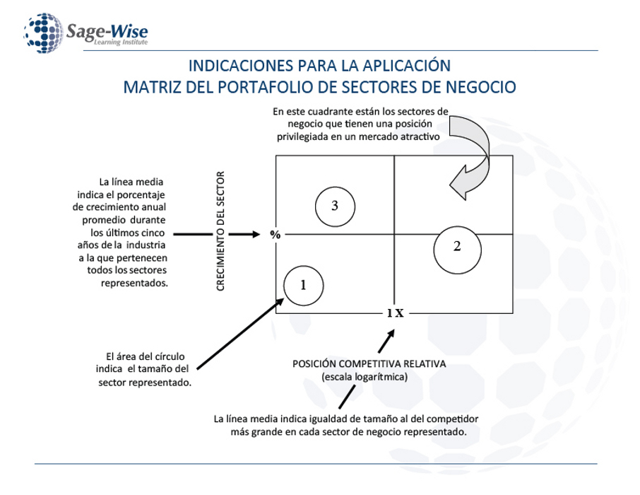

Matriz del portafolio: ubique cada sector según su crecimiento y su posición frente al competidor más grande.
Cada sector es una línea de negocio de la empresa. Necesita tres datos y un nombre.
| Sector | Tamaño | Crec. % | Pos. | Cuadrante |
|---|
Todavía no hay sectores. Agregue el primero arriba, o pulse Cargar ejemplo.
Arrastre las dos líneas verdes para mover los cortes. El área de cada círculo representa el tamaño del sector.
